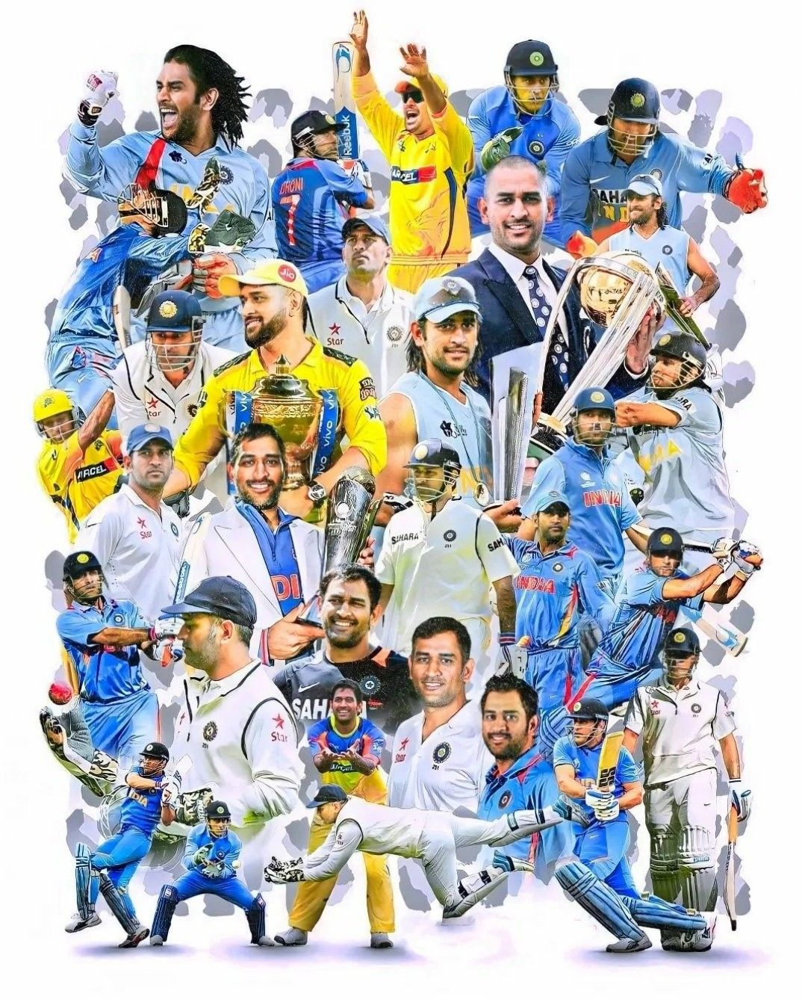

About MS Dhoni

Mahendra Singh Dhoni is a former Indian cricketer, born July 7, 1981, in Ranchi, Jharkhand, widely regarded as one of the greatest captains and finishers in the history of the game. He made his international debut in 2004 and retired from international cricket in August 2020, but continues to be closely associated with the Chennai Super Kings (CSK) in the IPL.
Career Snapshot
| Category | Details |
|---|---|
| Born | July 7, 1981, Ranchi |
| International Debut | 2004 |
| International Retirement | August 2020 |
| IPL Team | Chennai Super Kings (since 2008) |
| Role | Wicketkeeper-batter |
| Nickname | "Captain Cool" / "Thala" |
Captaincy Journey
Dhoni led India to victory in the 2007 T20 World Cup, the 2011 Cricket World Cup, and the 2013 ICC Champions Trophy, making him the only captain to win all three major ICC white-ball titles. With Chennai Super Kings, he led the franchise to five IPL titles, jointly the most of any captain. He stepped back from CSK's captaincy in 2024, handing leadership to Ruturaj Gaikwad, while remaining an icon of the franchise.
Playing Style
Dhoni built his reputation as one of the calmest finishers the game has seen, famous for reading run-chases under pressure and closing out matches with minimal visible stress. His lightning-fast stumping speed as a wicketkeeper and his composed decision-making as captain earned him the nickname "Captain Cool."
IPL & Current Form (2026)
Now in his mid-40s, Dhoni's playing time with Chennai Super Kings has become limited, and he has dealt with injury setbacks through the 2026 IPL season. While retirement speculation continues to surround him each year, Dhoni remains an enormously influential figure for the franchise, both as a mentor to younger players and as one of Chennai's most beloved sporting icons.
Legacy
MS Dhoni's legacy extends far beyond statistics — as India's most successful captain in white-ball cricket and the architect of Chennai Super Kings' identity, his calm leadership style and clutch performances in the biggest moments have made him one of the most respected figures in the history of Indian sport.